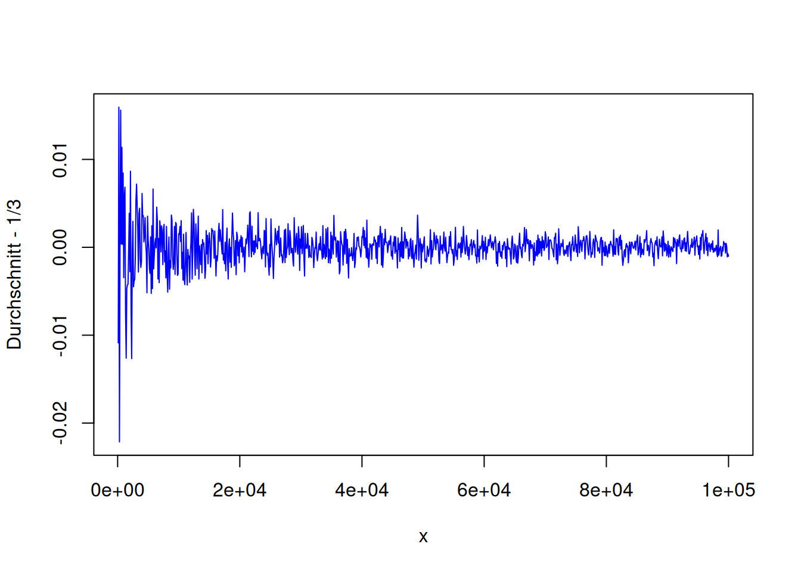
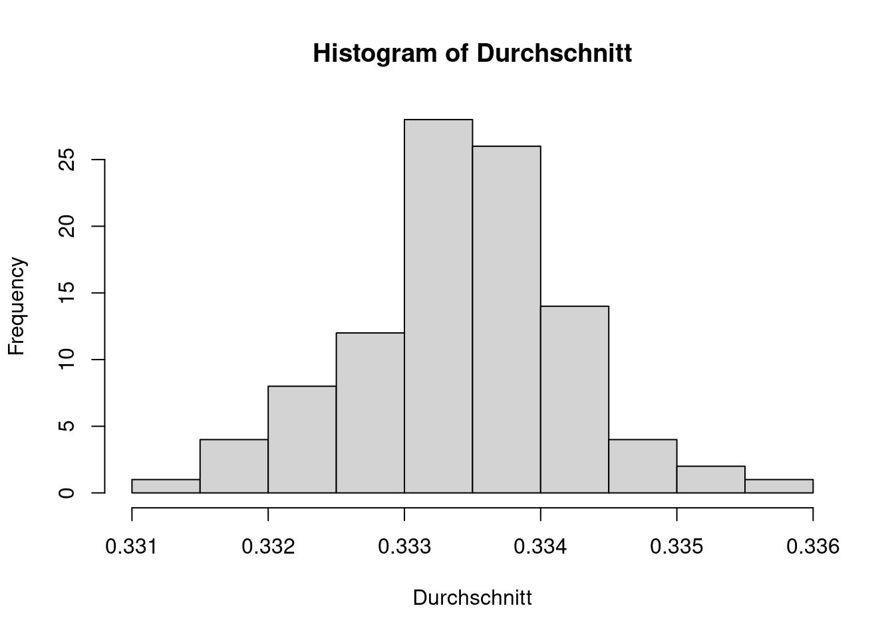

Chapter 3 Kontrollstrukturen und Funktionen
Im Vergleich zu C++, C# und Java unterscheidet sich R stark von der Art und Weise wie komplexere Datenstrukturen aufgebaut sind. Dies werden wir erst im nächsten Kapitel genauer beleuchten. Große und erst einmal nicht so offensichtliche Unterschiede gibt es aber auch bei Variablen, während es im Bereich Kontrollstrukturen und Funktionen weniger Überraschungen gibt, wie wir in diesem Kapitel sehen werden.
3.1 Namen und Objekte: Ein erster Vergleich mit C und C++
Im Folgenden setzen wir Grundkenntnisse in C und C++ voraus und wollen erste grundlegende Unterschiede zwischen R und C bzw. C++ beleuchten. Wie wir sehen werden, gibt es viele Ähnlichkeiten. R wird ähnlich wie C durch Blöcke strukturiert, die durch geschweifte Klammern gekennzeichnet werden. Auch Kontrollstrukturen wie Verzweigungen mithilfe von if-else oder Schleifen (while oder for) haben eine ähnliche Syntax und Semantik.
Erste augenfällige Unterschiede:
Im Gegensatz zu C wird R interpretiert! Welche Vor- und Nachteile ergeben sich dadurch?
In R wird üblicherweise der Operator
<-für eine Zuweisung benutzt (obwohl auch der in C benutzte Zuweisungsoperator=benutzt werden kann)In R werden Anweisungen nicht durch ein Semikolon abgeschlossen.
Variablen sind ein grundlegendes Konzept beider Sprachen; aber es gibt große und weitreichende Unterschiede. Wir wollen dies an einem Beispiel veranschaulichen. Um R wirklich zu verstehen, ist es hilfreich, diese Unterschiede zu kennen.
Hier und im Folgenden werden wir den Begriff „Objekt“ benutzen. Damit meinen wir nicht ein Objekt im objektorientierten Sinn (also eine Instanz einer Klasse), sondern wollen damit einen Speicherbereich in der Ausführungsumgebung bezeichnen, der neben eventuell zusätzlichen Metadaten Bitfolgen enthält, die als Werte eines bestimmten Datentyps interpretiert werden können.
In C:
Es wird ein Objekt im Speicher angelegt, das groß genug ist, einen int-Wert zu repräsentieren, aber nicht größer. Auf einem üblichen PC ist das so erzeugte Objekte genau 4 Byte groß und der entsprechende Speicherbereich enthält die Dualdarstellung von 5 (also 29 Nullen gefolgt von 101). Der Variablenname n ist nun der Bezeichner für dieses Objekt (oder Speicherbereich); man kann auch sagen: Das so erzeugte Objekt hat den Namen n.
Solange n gültig (und sichtbar) ist, ist n immer ein Bezeichner für einen int-Wert, dessen Binärdarstellung stets im selben Speicherbereich hinterlegt ist. Also bezieht sich n immer auf denselben Speicherbereich.
Der zugehörige Wert von n kann sich ändern, z.B. durch eine Zuweisung oder eine Anweisung wie n++. Nicht ändern kann sich aber der Datentyp (in unserem Fall int). Bereits beim Kompilieren wird n an den Datentyp int gebunden. Man spricht in diesem Zusammenhang vom frühen Binden (early binding) im Gegensatz zum späten Binden (late binding), das wir in R vorfinden.
In R:
Auch hier wird ein Objekt in einem Speicherbereich erzeugt. Im Gegensatz zu C kann man aber in R nicht direkt auf diesen Speicherbereich zugreifen. Auch ist der benutzte Speicherbereich viel größer: Auf dem hier benutzten System sind dies 56 Byte für eine 64-Bit-Version von R; eine 32-Bit-Version von R braucht ein paar Byte weniger (wieso?), vielleicht 32 Byte:
## num 5## 56 bytesDie Funktion object.size() gibt die Speichergröße des übergebenen Objekts zurück; dies ist allerdings nur ein geschätzter Wert und kann ungenau sein, insbesondere wenn Teile der Daten mit anderen Objekten geteilt werden.
Bemerkung:
- Die Punktnotation
object.size()ist für C++-Programmierer in diesem Zusammenhang recht ungewohnt.size()ist hier keine Methode des Objekts (oder der Klasse bzw. Struktur)object, sondern bezeichnet eine Funktion und keine Methode. Viele C++-Programmierer würden die Funktion stattdessenobjectSize()oderobject_size()nennen.
Das nächste Quelltextbeispiel zeigt, dass sowohl durch n <- c(5,7) als auch durch n <- 5 ein Vektorobjekt (vom Typ double) erzeugt wird:
## num [1:2] 5 7## [1] "double"## [1] TRUE## [1] 2## num 5## [1] "double"## [1] TRUE## [1] 1Die Funktion length() gibt die Länge, also die Anzahl der Elemente im Vektor, zurück, während die Funktion typeof() den Typ zurückgibt. Die Funktion is.vector() gibt den booleschen Wert TRUE zurück, falls es sich um einen „echten“ Vektor handelt (dazu später mehr, oder siehe ?is.vector); in allen anderen Fällen wird FALSE zurückgegeben (TRUE und FALSE können in R auch durch T und F abgekürzt werden).
R kennt also keine skalaren Werte. Durch die Zuweisung n <- 5 wird n nicht an den skalaren Wert 5 gebunden, sondern an einen Vektor der Länge 1! Wenn wir im Folgenden trotzdem von skalaren Werten sprechen, dann meinen wir implizit Vektoren der Länge 1.
Fragen:
Welche Funktion gibt es in R, deren Funktionsnamen mit „is.“ beginnen und was bewirken sie?
Wird durch
n <- TRUEauch ein Vektorobjekt erzeugt?
Im Gegensatz zu Programmiersprachen wie C, C++, C# oder Java haben Variablen in R keinen festen Datentyp. In R verweisen (oder zeigen) Variablen auf Objekte; man sagt auch, dass eine Variable an ein Objekt gebunden ist. Während in C und C++ dieser Verweis (ähnlich wie eine Referenz) dauerhaft ist, kann sich in R diese Bindung durch eine Zuweisung ändern:
## [1] "double"## num 5## [1] 5## [1] NA## [1] "integer"## int [1:1000] 1 2 3 4 5 6 7 8 9 10 ...## [1] "character"## chr [1:3] "eins" "zwei" "drei"1:1000 ist ein Vektor vom Typ integer, der die ganzen Zahlen von 1 bis 1000 umfasst; dies ist identisch zu seq(from = 1, to = 1000, by = 1) (was wiederum identisch zu seq(from = 1, to = 1000) ist, siehe ?seq).
Durch x <- c("eins", "zwei", "drei") wird x an einen Vektor vom Typ character gebunden, der die Länge 3 hat. Variablen werden in R erst während der Laufzeit (und nicht schon beim Kompilieren) an ein Objekt gebunden (late binding). Somit hat eine Variable keinen festen Datentyp, sondern eine Variable ist an ein Objekt gebunden, dem ein fester Datentyp zugeordnet ist. Wir sagen in diesem Zusammenhang auch, dass die Variable auf das Objekt verweist.
Im Gegensatz zu C enthält in R jedes Objekt zusätzlich sogenannte Metadaten, die u.a. den Typ des Objekts beschreiben (siehe z. B. (Wickham 2019a), Abschnitt 18.1: Object size, Seite 379 oder (R Core Team 2019), Abschnitt 1.1). Zwei oder mehrere Variablen können auf dasselbe Objekt verweisen (d.h. an dasselbe Objekt gebunden sein):
Durch die Zuweisung b <- a wird kein neues Objekt erzeugt (a wird also nicht in b kopiert)!
Werden allerdings a oder b verändert, dann wird umkopiert und die Variablen a und b zeigen dann auf unterschiedliche Objekte (Dies kann z.B. mithilfe der Funktion tracemem() verfolgt werden; siehe ?tracemem.).
## [1] 1 5 3 2## [1] 1 0 3 2Erst durch die Änderung b[2] <- 0
erzeugt R eine Kopie des Objekts, das an den Bezeichner
agebunden ist,ändert sich die Kopie entsprechend und
wird der Name
ban das neue Objekt gebunden.
Dieses Verhalten wird auch als copy-on-modify bezeichnet.
Ein Objekt kann mithilfe der Funktion rm() auch wieder gelöscht werden:
Die Anweisung rm(list=ls()) löscht ohne Warnung alle Objekte! (Mit ls() erhalten Sie ein Vektor aller erzeugten Objekte)
Im Gegensatz zu C und C++ gibt es in R einen Garbage Collector, kurz auch mit GC bezeichnet. Er ist für die Speicherverwaltung von R zuständig. So fordert er zum Beispiel zusätzlichen Speicher vom Betriebssystem an, falls der interne vom GC verwaltete Memory-Pool nicht mehr ausreicht. Wenn Speicherbereiche nicht mehr benutzt werden, z.B. weil sie Objekte enthalten, die an keinen Namen mehr gebunden sind, dann gibt sie der GC bei Bedarf wieder frei. Dies alles passiert automatisch im Hintergrund, ohne dass der GC explizit aufgerufen werden muss (siehe auch ?gc). Man kann den GC explizit mit gc() aufrufen (siehe ?gc), aber dies ist eigentlich nie wirklich erforderlich; als Seiteneffekt erhält man allerdings Informationen über den Status des GCs: u. a. über die Größe des aktuell benutzten Speichers (siehe used) und wie viel Speicher benutzt werden kann, bevor ein neuer GC-Aufruf gestartet wird (siehe gc trigger).
## used (Mb) gc trigger (Mb) max used (Mb)
## Ncells 1165026 62.3 2044591 109.2 2044591 109.2
## Vcells 2231973 17.1 8388608 64.0 8376622 64.0Kurzzusammenfassung
- Objekt
- R kennt keine skalaren Werte (sondern es werden Vektoren der Länge 1 für skalare Werte genutzt).
- In R verweisen Variablen auf Objekte; man sagt auch, dass eine Variable an ein Objekt gebunden ist.
- Eine Variable hat keinen festen Datentyp, sondern ist an ein Objekt gebunden, dem ein fester Datentyp zugeordnet ist.
- Jedes Objekt hat zusätzlich sogenannte Metadaten, die u. a. den Typ des Objekts beschreiben.
object.size()length()typeof()is.vector()- R nutzt copy-on-modify
- Garbage Collection
1:1000ist ein Vektor vom Typinteger, der die ganzen Zahlen von 1 bis 1000 umfasst.- late binding: Variablen werden erst während der Laufzeit an ein Objekt gebunden
3.2 Funktionen
Neben Objekten sind Funktionen ein zentraler Bestandteil von R. Mit Funktionen können Anweisungen zu einer Einheit zusammengefasst werden. Dadurch kann Quelltext strukturiert und die durch die Funktion beschriebene Funktionalität mehrfach in einem Programm verwandt werden. Funktionen sind in R sogenannte „first-class-objects“; d.h. es sind in der Tat Objekte, die fast immer wie andere „Datenobjekte“ (Vektoren, Tabellen, Listen, …) benutzt werden können.
Im Folgenden gehen wir davon aus, dass Sie mit dem Konzept einer Funktion vertraut sind, so wie es zum Beispiel in C, C++ oder Java verwandt wird. Ähnlich wie in anderen Programmiersprachen wird in R eine Funktion durch eine Anweisung der folgenden Form definiert:
function(arg_1, arg_2, ...) expression
Hierbei bezeichnet arg_1, arg_2, ... eine Liste der formalen Funktionsparameter und expression den Funktionskörper, der in der Regel aus einem durch geschweifte Klammern begrenzten Block von Anweisungen besteht. Insgesamt wird hierdurch ein Objekt erzeugt (eine sogenannte anonyme Funktion), das aber an keinem Namen gebunden ist. Ein Name wird aber gebraucht, wenn man die Funktion aufrufen will! Daher wird in der Regel eine Funktion in einer Zuweisung definiert, die dann folgende Form hat:
name <- function(arg_1, arg_2, ...) expression
Solange die Variable name an das Funktionsobjekt gebunden ist, kann die Funktion dann durch name(arg_1, arg_2, ...) aufgerufen werden.
Ein einfaches Beispiel mit drei formalen Funktionsparametern x, y und z soll dies illustrieren:
Solange f1 nicht durch eine Zuweisung an ein anderes Objekt gebunden wird, kann nun unsere Beispielfunktion aufgerufen werden (und f1 kann als Funktionsname betrachtet werden, der allerdings eventuell nur temporär ist):
## [1] 6## [1] 14Wenn wir wollen, können wir auch einen weiteren Namen an unser Funktionsobjekt binden:
## [1] 14Unsere einfache Beispielfunktion f1 besitzt neben den formalen Parametern x, y, z eine lokale Variable tmp. Lokale Variablen können nur im entsprechenden Funktionskörper angesprochen werden:
## [1] 6## [1] 1In unserem Beispiel ist die lokale Variable tmp eigentlich unnötig; man hätte auch kürzer schreiben können:
Wie in C beendet eine return-Anweisung den Funktionsaufruf. Im Gegensatz zu C ist eine return-Anweisung aber nicht notwendig: Fehlt die return-Anweisung, dann wird der letzte in der Funktion berechnete Wert zurückgegeben:
Theoretisch hätte man hier sogar auch auf die geschweiften Klammern verzichten können. Insgesamt liefern also alle drei Funktionsaufrufe denselben Wert zurück:
## [1] 11## [1] 11## [1] 11Wie wir gesehen haben, gibt es in R keine skalaren Werte; stattdessen werden Vektoren der Länge 1 benutzt. Was passiert, wenn wir unserer Beispielfunktion Vektoren übergeben, deren Länge größer als eins ist?
## [1] 6 12 18 24 30 36 42 48 54 60Wie wir schon bei der Funktion sqrt() in Abschnitt 2.3 gesehen haben, wird nun die Funktion elementweise angewandt und als Ergebnis wird ein Vektor gleicher Länge zurückgegeben.
Bestehen die Funktionsargumente aus Vektoren unterschiedlicher Länge, dann tritt automatisch Recyling ein (siehe Abschnitt 2.4):
## [1] 6 12 12 18 18 24 24 30 30 36## [1] 3 6 5 8 7 10 9 12 11 14Zur Kontrolle soll für jeden der beiden Funktionsaufrufe noch einmal das jeweils letzte Ergebnis explizit berechnet werden:
## [1] 36## [1] 14Informationen über einzelne Funktionsobjekte erhält man, indem man die Funktionsnamen ohne Klammern und Argumente eingibt:
## function (x, y, z)
## {
## tmp <- 2 * y + 3 * z
## return(x + tmp)
## }
## <bytecode: 0x560e2c859a68>## function (x) .Primitive("sqrt")## function (y, x)
## .Internal(atan2(y, x))
## <bytecode: 0x560e294ef0f8>
## <environment: namespace:base>Kurzzusammenfassung
name <- function(arg_1, arg_2, ...) expression- Formale Funktionsparameter
- Funktionskörper
- Lokale Variablen
- Fehlt die
return-Anweisung, dann wird der letzte in der Funktion berechnete Wert zurückgegeben.- Elementweises Anwenden der Funktion bei Vektorargumenten (und eventuelles Recycling)
- Unterschied
sqrtundsqrt(2)
3.2.1 Benannte und optionale Argumente
## [1] 3 4 5 6 7 8 9 10 11 12## [1] 3 6 5 8 7 10 9 12 11 14## [1] 6 12 12 18 18 24 24 30 30 36Ähnlich wie in C# kann ein Funktionsaufruf sogenannte benannte Argumente beinhalten. Benannte Argumente ermöglichen es, durch Nennung des Parameternamens ein Argument für einen bestimmten Parameter anzugeben. Dies hat den Vorteil, dass die Position des Parameters dann keine Rolle spielt.
## [1] 6 12 12 18 18 24 24 30 30 36## [1] 6 10 14 18 22 26 30 34 38 42## [1] 6 10 14 18 22 26 30 34 38 42Benannte Argumente werden sehr häufig benutzt. Ein einfaches und hoffentlich selbsterklärendes Beispiel sind folgende Funktionen:
rnorm(n, mean = 0, sd = 1)
runif(n, min = 0, max = 1)
Kurzzusammenfassung
- Benannte und optionale Argumente (Default-Werte)
rnorm(n, mean = 0, sd = 1)runif(n, min = 0, max = 1)
3.2.2 Call-by-value und Copy-on-modify
Wie in C ist das Standardverhalten bei Funktionsaufrufen Call-by-value; also ändert ein Funktionsaufruf die ursprünglich übergebenen Argumente nicht:
## [1] 1 2 3 4 5 6 7 8 9 10## [1] 84 4 6 8 10 12 14 16 18 20Die Funktion f arbeitet mit einer Kopie des übergebenen Objekts x. Lediglich diese Kopie wird durch die Anweisung x[1] <- 42 verändert; das ursprüngliche Objekt bleibt hingegen unverändert.
Allerdings wird zumindest in neueren R-Versionen Call-by-value in Verbindung mit der copy-on-modify Semantik benutzt: Nur wenn die aufgerufene Funktion ein übergebenes Argument verändern will, wird zuvor eine Kopie dieses Arguments erstellt und die Kopie entsprechend verändert. Im folgenden Beispiel sollte also beim Funktionsaufruf keine Kopie erstellt werden, dies ist natürlich wichtig bei großen Datenmengen:
g <- function(x){
return(length(x))
}
v <- 1:1e9 # E-Notation: 1e9 entspricht einer Milliarde
w <- g(v)
w## [1] 10000000003.2.3 Keine Zeiger und kein Call-by-reference
In R sind Variablennamen an Objekte gebunden; Variablennamen „verweisen“ also auf Objekte, ähnlich wie Referenzen oder Zeiger. In R gibt es jedoch keine expliziten Zeiger oder Referenzen. Ist es in R möglich, eine Funktion zu schreiben, die die übergebenen Argumente direkt verändert? In C kann man dies mithilfe von Zeigern lösen; Referenzen sind in C++ eine zusätzliche Möglichkeit, dies mit wenig Aufwand und sehr effektiv zu lösen. In R ist dies hingegen mit einfachen Mitteln nicht möglich. Um dies zu verdeutlichen, versuchen wir eine Funktion zu schreiben, die die ersten beiden Elemente eines Vektors vertauschen soll. Ein erster nicht erfolgreicher Versuch könnte so aussehen:
## [1] "eins" "zwei" "drei"Da R bei Funktionsaufrufen Call-by-value benutzt, kann dies nicht funktionieren: es wird eine Kopie von z erstellt und die beiden ersten Elemente dieser Kopie vertauscht!
Was würde man stattdessen in R machen? Die Antwort ist einfach, aber leider beinhaltet sie unnötiges Kopieren; insbesondere wenn x extrem viele Daten enthält, sollte eigentlich unnötiges Kopieren vermieden werden:
## [1] 2 1 3 4In der Funktion vertausche2() wird eine Kopie von z erstellt, die beiden ersten Elemente vertauscht und die Variable z an die von der Funktion modifizierte Kopie gebunden.
3.2.4 Operator versus Funktionsaufruf
Abgesehen von der Syntax gibt es keinen Unterschied zwischen einem Operatorausdruck und einem entsprechenden Funktionsaufruf; das Operatorsymbol dient dann als Funktionsname (s. R Core Team (2022), Abschnitt 3.1.4). So kann unser erstes Beispiel 6*7 auch folgendermaßen geschrieben werden:
## [1] 42Da * kein erlaubter Namen ist (non-syntatic, siehe Abschnitt 2.2), muss es allerdings in Anführungszeichen gesetzt werden.
Kurzzusammenfassung
- Call-by-value in Verbindung mit Copy-on-modify
- Keine Zeiger und kein Call-by-reference
- E-Notation wie z.B.
1e9
3.3 Kontrollstrukturen
Einzelne Anweisungen werden in R üblicherweise durch einen Zeilenumbruch getrennt; sie können aber auch durch ein Semikolon abgegrenzt werden. Wie in C auch, können Anweisungen zu einem Block (auch Blockanweisung genannt) mithilfe geschweifter Klammern gruppiert werden. Syntaktisch ist ein Block äquivalent zu einer einzelnen Anweisung.
Da die elementaren Kontrollstrukturen in R sehr ähnlich zu den Kontrollstrukturen in Sprachen wie C, C++, C#, Java, JavaScript, … sind, werden wir sie an dieser Stelle nicht detailliert behandeln (siehe auch ?Control oder ?while). Einen großen Unterschied gibt es allerdings: In R werden Kontrollstrukturen intern durch Funktionen realisiert!
Schleifen haben in R den Ruf, recht langsam zu sein und viele Autoren empfehlen deshalb, sie wenn möglich zu vermeiden. Wie wir gesehen haben (siehe Abschnitt 2.3), können viele Funktionen und Operatoren direkt auf Vektoren angewandt werden, so dass in diesem Fall keine expliziten Schleifen notwendig sind:
## [1] 0.7452069 0.8820497 0.4212873 -0.9815359 0.9975643 0.2146034
## [7] 0.8128370 -0.7451375 -0.1737885 -0.6932617 -0.9919059 0.7195282Des Weiteren gibt es eine Familie von Funktionen, bestehend aus apply(), lapply(), sapply() …, die oft im Vergleich zu expliziten Schleifen viele Vorteile bieten; darauf werden wir später eingehen.
3.3.1 Verzweigung: if-else
Wie in C lautet die formale Syntax:
if( statement1 )
statement2
else
statement3
Wie in C ist der else-Teil optional. Falls statement2 oder statement3 aus mehreren Anweisungen bestehen, müssen geschweifte Klammern benutzt werden! Auch ist ein Zeilenumbruch zwischen ‚}‘ und else nicht erlaubt.
if-else gibt den zuletzt berechneten Wert zurück. Dies wird oft in Zuweisungen ausgenutzt. Statt:
kann daher auch kürzer geschrieben werden:
Wie in C bezeichnet == den Vergleichsoperator! Der Operator = entspricht hingegen einer Zuweisung (siehe Abschnitt 2.2). Und zur Erinnerung: %% bezeichnet den Modulo-Operator (siehe Abschnitt 2.3)
Genau wie in C sind auch „else-if“-Ketten erlaubt:
if( statement1 ){
statement2
} else if ( statement 3 ) {
statement4
} else if ( statement5 ) {
statement6
} else
statement8
3.3.2 Verzweigung: ifelse
Die Auswertung der if-Bedingung in der Kontrollstruktur if-else berücksichtigt lediglich das erste Element eines Vektors. if-else ist daher nur bedingt für Vektoren geeignet. Insbesondere sind Funktionen, die im Funktionsrumpf ein if-else benutzen, nicht vektorisierbar!
In neueren R Versionen wie z.B. R-4.2.1 wird eine Error-Meldung ausgegeben:
## Error in if (x%%2 == 0) {: the condition has length > 1Ebenso:
## Error in if (x%%2 == 0) x else x + 1: the condition has length > 1In älteren R Versionen wie z.B. R-4.1.1 wird nur eine Warnmeldung erhalten und die ifelse-Verzweigung trotzdem durchlaufen:
#R> Warnung: the condition has length > 1 and only the first element will be used [1] 2 3 4 5 6 7 8 9 10 11Für diesen Zweck gibt es die Funktion ifelse():
ifelse(test, wahr, falsch)
Zurückgegeben wird ein Objekt der gleichen Größe und Form wie test, der abhängig vom Wahrheitswert von test elementweise gefüllt wird von den entsprechenden Elementen aus wahr bzw. falsch.
## [1] 2 2 4 4 6 6 8 8 10 10Entsprechend ergibt sich mithilfe von Recycling (siehe Abschnitt 2.4):
## [1] 5 9 5 9 5 9 5 9 5 9 5 93.3.3 Schleife: while und repeat
Auch das Grundgerüst einer while-Schleife ist wie in C:
while ( statement1 ) statement2
Ebenso wie in C wird break verwendet, um eine Schleife vorzeitig zu beenden. Statt continue wie in C wird in R allerdings next verwendet, um innerhalb der Schleife sofort (und ohne die folgenden Anweisungen im Schleifenrumpf auszuführen) zur nächsten Schleifenbewertung zu springen.
Weiterhin entspricht repeat im Wesentlichen while(TRUE).
3.3.4 Schleife: for
Die Syntax für die for-Schleife (ähnlich wie in Python) lautet:
for ( name in vector )
statement1
Hierzu ein kleines Beispiel:
## [1] 121
## [1] 144
## [1] 169
## [1] 196
## [1] 225break und next werden ähnlich wie in einer while-Schleife (siehe oben) behandelt.
3.3.5 Mehrfachzweigung: switch
In R gibt es auch eine switch-Anweisung für eine Mehrfachverzweigung, deren Syntax sich aber nicht an C anlehnt. Die Syntax ist unterschiedlich zu C und zeigt aber auch deutlich, dass es sich intern um einen Funktionsaufruf handelt:
switch(statement, list)
Zuerst wird statement ausgewertet und der erhaltene Wert als Index der Liste list interpretiert. Ist er kein gültiger Indexwert, dann wird NULL zurückgegeben.
## [1] "eins"## [1] "drei"NULL ist ein spezielles Objekt in R, das nur einmal in R existiert. Es wird in der Regel benutzt, um anzuzeigen, dass es kein entsprechendes Objekt gibt (im Gegensatz zu NA, das anzeigt, dass kein Wert verfügbar ist).
Kurzzusammenfassung
- Block
if-elseifelsewhile,repeatbreak,nextforswitchNULL
Übungen
Aufgabe 2
Welchen Wert haben die folgenden Vektoren und was ist ihr Typ?
| Variable | Wert | Type |
|---|---|---|
g |
||
x |
||
c |
||
z |
Was bewirkt die Funktion as.character()? Gibt es auch as.double() und as.integer()?
Aufgabe 3
Gegeben ist: x <- 1; for(i in 1:20) x <- c(x, x)
- Welchen Wert hat
x? - Welchen Datentyp hat
x? - Schätzen Sie die Größe von
x: zuerst recht grob im Kopf und danach genauer. - Wie hätte man
xviel einfacher und schneller erzeugen können? - Wie kann
xwieder gelöscht werden? - Was ändert sich, wenn statt
x <- 1nunx <- 1Lgeschrieben wird?
Aufgabe 4
- Erzeugen Sie 1000 (pseudo-)zufällige Werte gemäß der Normalverteilung mit Erwartungswert 3 und Varianz 4.
- Testen Sie die erzeugten Daten.
Aufgabe 5
Vereinfachen Sie folgende Schleife:
Hinweis: Der Operator && bezieht sich bei Vektoren nur auf das erste Element; bei Vektoren sollte man statt && den Operator & benutzen! Ähnliches gilt für die Operatoren || und | (siehe z.B. ?‘&‘).
Aufgabe 6
Implementieren Sie eine Funktion
skalierenW(), die einen nichtnegativen numerischen Vektorxals Häufigkeiten interpretiert und den entsprechenden Wahrscheinlichkeitsvektorpzurückgibt, d. h. folgende Aussagen sind dann wahr:Implementieren Sie eine Funktion
skalierenAffin(), die einen numerischen Vektorxfolgendermaßen linear skaliert (d.h. mithilfe einer affinen Abbildung):- Bezeichne mit \(x_{min}\) und \(x_{max}\) den kleinsten bzw. größten Wert von
x. - \(x_{min}\) soll auf 0 und \(x_{max}\) auf 1 abgebildet werden.
- Da abgesehen von einer Verschiebung die Skalierung linear ist, wird also ein Element \(x_{i}\) von
xauf (\(x_i\) - \(x_{min}\)) / (\(x_{max}\) - \(x_{min}\)) abgebildet.
Beispiele:
## [1] 0.00 0.25 0.50 0.75 1.00## [1] 0.00 0.25 0.50 0.75 1.00## [1] 0.00 0.05 1.00## [1] 0.00 0.05 1.00## [1] 0.25 0.00 1.00 0.75Testen Sie Ihre Lösung auch mit folgenden problematischen Eingabewerten. Wie sieht Ihre Lösung aus?
## [1] 0.00 0.25 0.50 0.75 1.00 NA## [1] 0.25 0.00 Inf 1.00 0.75- Bezeichne mit \(x_{min}\) und \(x_{max}\) den kleinsten bzw. größten Wert von
Aufgabe 7
Ein Sensor einer Maschine, der auf einer geradlinigen Leiste angebracht ist, fährt nacheinander unterschiedliche Punkte \(P_1\), \(P_2\), …, \(P_n\) ab. Die eindimensionalen Koordinaten \(x_1\), \(x_2\), …, \(x_n\) der \(n\) Punkte sind dabei gleichförmig im Intervall [0,1] und unabhängig verteilt. Wie groß ist der durchschnittliche Weg (in Abhängigkeit von \(n\)?), die der Sensor zurücklegt?
Die Lösung kann relativ leicht analytisch berechnet werden. Sie sollen jedoch die Lösung nicht analytisch bestimmen, sondern dies für unterschiedliche \(n\)-Werte in R simulieren, die Ergebnisse visualisieren und aufgrund der ermittelten Daten eine Vermutung aufstellen. Implementieren Sie hierfür eine Funktion rstrecken(n, min = 0, max = 1), die ähnlich wie runif() oder rnorm() „zufällige“ Werte zurückgibt und die (im Gegensatz zu runif() oder rnorm()) als zurückgelegte Strecken des Sensors interpretiert werden können.
Eine Visualisierung könnte wie folgt aussehen:

Figure 3.1: Eine mögliche Visualisierung.

Figure 3.2: Histogramm der durchschnittlichen Strecke.
Aufgabe 8
Implementieren Sie eine Funktion
llaenge1(), die die Lauflängen-Codierung einer binären Folge (bestehend aus Nullen und Einsen) zurückgibt. In der folgenden Tabelle sehen Sie einige Beispiele:xllaenge1(x)llaenge(x)0,0,0,1,1,0,0,0,0,1,0,1,1 3,2,4,1,1,2 3,2,4,1,1,2 1,1,1,1,0,0 4, 2 4, 2 0,0,0,0,1,1 4, 2 4, 2 “a”,“a”,“a”,“a”,“a”,“a”,“b”,“b”,“b”,“b”,“a” FEHLER 6, 4, 1 “rot”, “rot”, “blau” FEHLER 2, 1 Implementieren Sie eine Funktion
llaenge(), die die Lauflängen-Codierung einer binären Folge (bestehend aus beliebigen zwei Symbolen) zurückgibt.Implementieren Sie eine Funktion
llaengeInverse(y, first = 0L, second = 1L), die aus einer Lauflängen-Codierung eine binäre Folge erzeugt, die aus den durchfirstundsecondspezifizierten Symbolen besteht. In der folgenden Tabelle sehen Sie einige Beispiele:rllaengeInverse(r)llaengeInverse(r, first=-1L)llaengeInverse(r, first="+", second="-")3, 2, 1 0,0,0,1,1,0 -1,-1,-1,1,1,-1 “+”,“+”,“+”,“-”,“-”,“+” 1, 4 0,1,1,1,1 -1,1,1,1,1 “+”,“-”,“-”,“-”,“-” Testen Sie Ihre implementierten Funktionen mithilfe der folgenden Funktion:
testLaufLaenge <- function(anzahl = 16L, maxLaenge = 12) { for(i in 1:anzahl){ n <- sample(1:maxLaenge, 1) x <- sample(c(0L,1L), n, TRUE) r <- llaenge(x) print(r) y <- llaengeInverse(r, 1L, 0L) if(y[1] != x[1]) y <- 1 - y if(any(x != y)) stop("Test nicht bestanden: ", x) } }Hinweis:
stop(): Stoppt die Ausführung der aktuellen Anweisung und gibt eine entsprechende Fehlermeldung aus